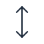
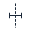
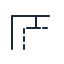
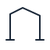
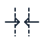

Grain direction
A two-ended arrow for a documented reference direction.
12 original SVG symbols · editable source and legend · MIT licence
Use these schematic marks with written labels. Their 64-unit viewBox does not define a physical print size. The reference square is not a printer calibration square.


A two-ended arrow for a documented reference direction.
A boundary line with two arrows pointing towards it.
One V-shaped alignment mark against a reference edge.
Two V-shaped alignment marks against a reference edge.


A dashed reference axis and a short transverse centre mark.

Two parallel angular paths with a perpendicular distance indicator.

A continuous angular outline used with an explicit cut-edge label.
A dashed curved path with distinct start and end markers.
A circular reference target; not a safe drilling instruction.


A pair of fold references with arrows directed toward the middle.
A circular button position with two hole references.
An uncalibrated square and side indicators for a labelled reference feature.